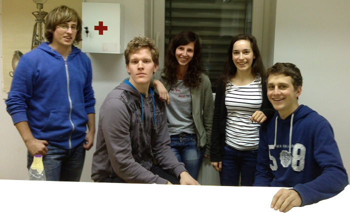
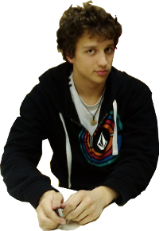

Ekipa

Od leve proti desni smo na sliki:
Matej Arko, praktičen človek, ki je vedno kaj gradil ali lepil in poskrbel, da smo imeli vedno narejeno, kar smo potrebovali.
Matevž Marinčič, ki nas je redno spravljal v smeh in vse spremenil v zabavo, a tudi vedno pripravljen poprijeti za delo ali vzeti kaj iz visokih polic, ko je to potrebno.
Tena Žužek, desna roka skupine, ki je pridno skrbela za dokumentacijo poskusov in urejene zapiske meritev, da smo sploh imeli kaj od njih.
Jasna Urbančič, vodja skupine, je bila naš zanesljiv kontakt z vodjo laboratorija, tako da smo vedno imeli vse potrebščine za tisti dan.

Maks Kolman je poskrbel za bolj tehnične detajle pri nastanku poročila in obdelavi meritev.
V skupini se nam je pridružil še Matej Logar, dijak gimnazije Vič, ki je letos ponovno v slovenski ekipi, ki se bo udeležila tekmovanja IYPT, in je bil zadolžen za nalogo lebdenje v zraku. Bil je izredno koristen dodaten član ekipe, saj je bil zelo dobro teoretično podkovan o problemu še predno smo ga mi dobili.
Asistent Sergej Faletič, prof. fiz. je bil vodja laboratorija. Priskrbel nam je vse potrebno za delo in nas tudi malce usmerjal na poti in pomagal pri razlagi raznih pojavov.